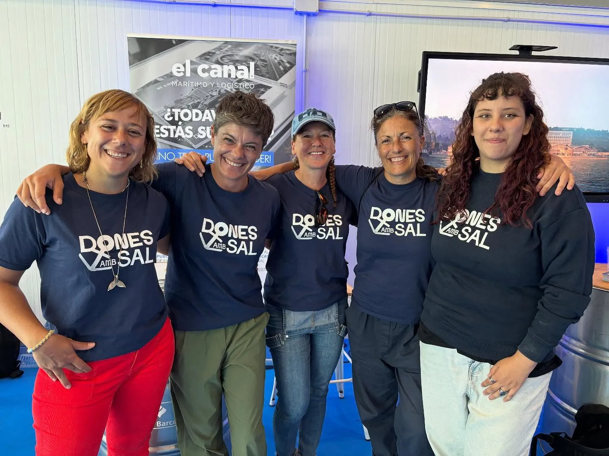
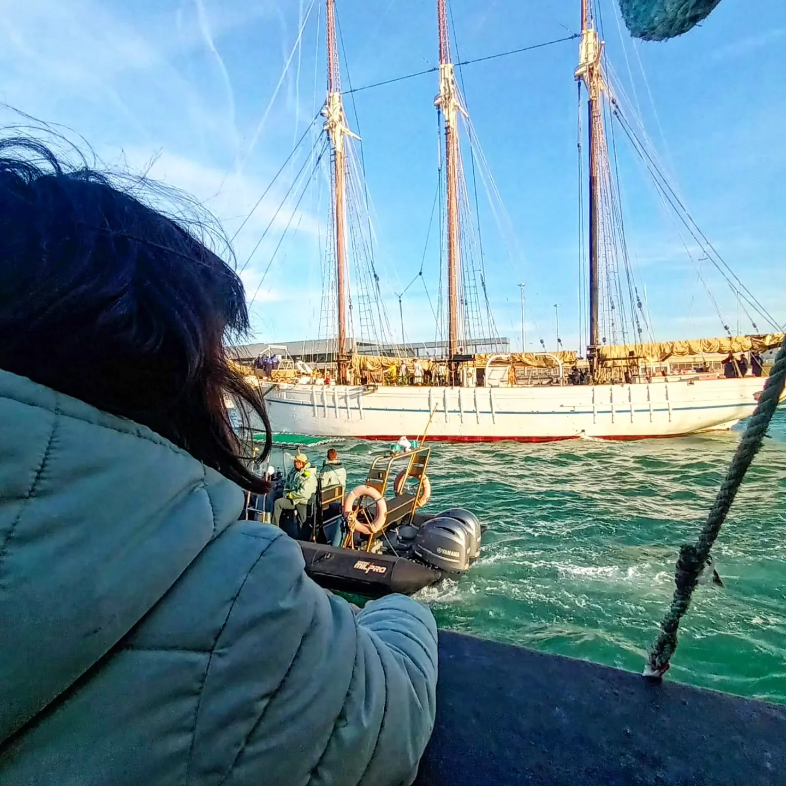

07 · Mujeres y mar
Donnes al Mar
Donnes al Mar es una asociación sin ánimo de lucro que busca visibilizar y poner en valor a las mujeres del mundo marítimo, náutico y pesquero, ámbitos históricamente masculinizados.


Qué hacen
Impulsan mentorías, actividades educativas y proyectos que relacionan igualdad de género, sostenibilidad, economía azul y cultura marítima. Andrea Comaposada participa como cofundadora y secretaria; Esther Zamora es presidenta.
Vínculo documental
Puede conectar historias que hoy aparecen separadas: la genealogía femenina de Slowfish, las pescadoras jóvenes de Palamós, la gestión de Cristina Mañas y las imágenes que Carbopesca está reuniendo sobre mujeres vinculadas al mar. La propuesta es construir una constelación de oficios, edades y territorios, evitando presentar a una sola persona como excepción.